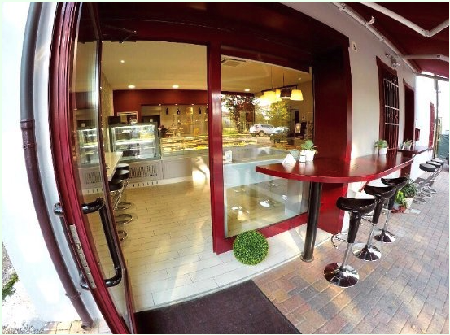
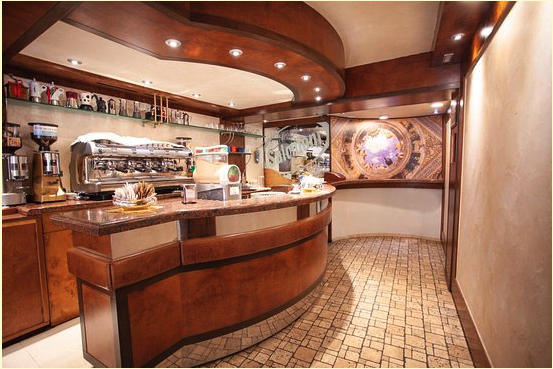
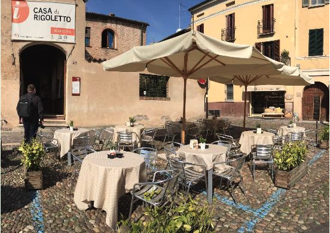

My Favorite cafés in Mantova
Caffetteria Andrea
About
Caffetteria Andrea has parking nearby for clients and it's Wheelchair
Accessible.
It has many varieties of coffees,cakes and sandwich.
It has the best cappuccino in the city and comes with a soft
buttered biscuit.
What visitors say 👉🏼 TripAdvisor
Get to the location
The Faster way to reach Caffetteria Andrea is by bus, the closest station is 5
min walk.
In alternative if you are on the other side of the city you can
across the lake by boat
Bottega Del Caffe
About
Bottega Del Caffe is ideal for businessmen because is close to the
centre
and to the train station, it offers speed wi-fi and comfortable
plugs next to each table to charge your laptop or phone.
It offers early breakfast in the morning and a quick lunch is
provided from 12 until 15 where you can test the best home made Lasagna.
What visitors say 👉🏼 TripAdvisor
Get to the location
Bottega Del Caffe is located about 10 min from the city center, and is 15 min walk a north of the train station
Rigoletto Cafe
About
Cafe Rigoletto is close to the Palazzo Ducale a historical palace
full of history and nature. In this cafe, you can test one of the
best Marocchino coffee which is the speciality of the house.
There aren't much-sitting spaces inside but on a sunny day, you can
sit outside and look at the amazing surrounding space full of
history and shops.
What visitors say 👉🏼 TripAdvisor
Get to the location
Cafe Rigoletto is located in close to the lake and in the city
center.
To reach this wonderful cafe you can use the bus which is 5 min walk
from the closest
station or arrive by boat and walk 15 min.
If you are driving a car you can leave the car in the parking in
front of the lake and walk for about 10 min